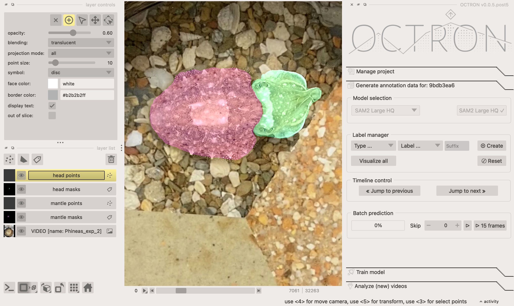
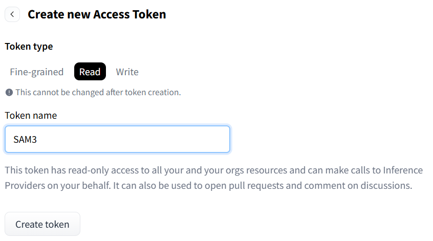
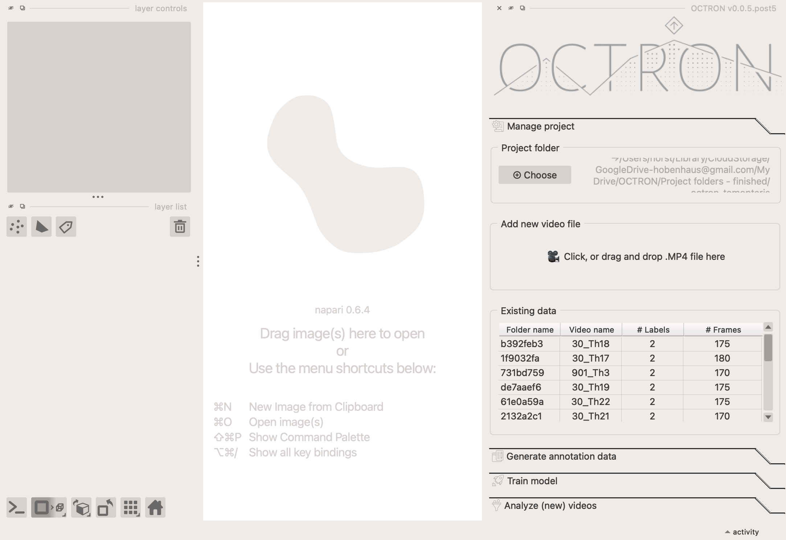

Generate annotation data¶
Before you can train your model, you need to tell it what to track. This is done by annotating the videos you’ll use for training in the Generate Annotation Data tab. This tab becomes active automatically once a video is loaded and displayed in the center area of napari. If you want to use videos you’ve already annotated, go to the Manage Project tab and double-click the video in the Existing Data table to load it. Annotation consists of three separate steps which are described in detail below:
- Model Selection and Label Management: Create new label names and layers in OCTRON to organize your annotation project within the GUI.
- Annotation: Perform initial object annotations using SAM-assisted region prediction for each object you want to track.
- Batch Prediction: Use SAM to predict annotations across subsequent frames, quickly generating additional training data.

Model selection¶
Select the model you would like to use for your annotations and click Load model.
Rules of thumb:
- The larger the model, the more resources (GPU) it demands and the slower it is. Pick the model that offers the highest precision for the resources you have available.
- All models can be used to label multiple animals, but SAM3 multi is much, much faster/more efficient, especially if you are tracking more than a handful
| Model | GPU demand | Precision | Speed | Example uses |
|---|---|---|---|---|
| SAM2 B Plus | + | + | ++++ | Simple objects occupying many pixels/a large part of the image and have high contrast, such as black beetle on a white background |
| SAM2 L | ++ | ++ | +++ | More complicated or smaller objects and complex scenes |
| SAM2 L HQ | ++ | +++ | ++ | Small and highly detailed objects |
| SAM3 | ++++ | +++ | + | As for SAM2 Large. Note: SAM3 is a very large model to run locally, be aware that it can be slow in prediction. |
| SAM3 multi | +++++ | +++ | + | Many objects of the same type, such as a swarm of flies or school of fish. Giving the labels expressive, real-world names (like "red cell" or "fly") helps increase the accuracy of the model. |
NOTE: Access to SAM3 models requires sharing some personal information with Meta
How to access SAM3
- Go to https://huggingface.co/facebook/sam3
- Click Sign Up (or Log in if you already have an account), follow the required steps and wait to be granted access
- Click your profile image in the top right corner of the page and select Access Tokens in the menu that appears
- Click +Create new token
- Select Read for Token type and call the token SAM3

- Click Create token and copy the access token that appears in a pop-up
- Close the OCTRON gui if you had it open
- In a terminal window, activate the octron environment and execute the following command, substituting YOUR_TOKEN_HERE with your access token
- The next time you open OCTRON the SAM3 models will download automatically
Label manager¶
This is where you create the labels for the animals/item/structure you want to track.
-
In the Type... drop-down menu, select the type of annotation you would like to use to label your structure. There are two types:
- Points: often the simplest and fastest. The model will automatically label what it thinks you want to track based on what you left-click on and exclude anything you right-click on. The point annotations do not need to be super precise. You can click roughly on what you want to track and add some points around it to exclude neighbouring regions.
- Shapes: recommended for labelling items that are not so easily created with the 'Points' type. Here you make an outline around the item to show the model what it should label.
-
In the Label... drop-down menu, select Create to open a dialogue box where you can name your label and click Add to add it.
-
Suffix: (Optional!) add a number here if you want to label multiple instances of the same thing (e.g. you have two LEDs and want to label them separately as LED 1 and LED 2). Note that you can label multiple instances of the same object in one go on the same layer if they look very similar to each other. If this works for you then you do not need to create multiple layers for the same thing. However, SAM2 models do not always track multiple objects per layer well, making it necessary to create multiple layers for those objects.
Why suffixes are useful
When using suffixes for your labels, e.g. LED 1 and LED 2, then these labels will end up in the same class (i.e. LED) during training. This means that the model treats these as the same type of object when training to identify them, and therefore has twice as many annotations to train on. In contrast, if you give the two LEDs separate labels (i.e. not using the suffix option) then the model will consider these to be separate types of objects and train on them separately too.
Hot tip: It is not always necessary to create separate annotations for repeated objects in your scene! SAM does pick up on repeated textures in your frames, so, if you have objects that look very similar, try to use a points layer to annotate them all in one go (on one single layer).Removing unwanted label names
If you want to remove one of the labels you've created from the Label ... drop-down menu, then select Remove in the drop-down menu and in the pop-up select the label you want to get rid of. This does not remove the annotation / mask layers, if any were created for that label.
-
-
Click the Create button to create your label. Two new layers will appear in the layer list (bottom left left hand section of OCTRON, more on that later).
-
Repeat steps 1-3 until you have all the labels you need. Important: Make sure you create all your labels and layers before the first batch prediction (see below). Some SAM2 models do not allow you to add new labels once you started predicting. However, if you run into this problem, you can easily Reset the model (see notes below).
Annotation¶
In the bottom left section of OCTRON you have a layer list of all your layers. When you click on a layer you'll get access to its layer controls in the panel directly above. All layers can be toggled visible/invisible by clicking the 👁️ symbol on the respective layer. Each label you create has two layers that it is associated with:
- A points or shapes layer (depending on what you selected) – this is where you make your annotations.
- A masks layer – this shows the result of your annotations, the region predictions, meaning what the SAM2 model has identified as the object based on your input.
You should never modify the masks layer manually. It is simply a visualization layer for the annotated objects. Only work with the points or shapes layers.
-
Click on the video layer (the bottom most layer) and make any adjustments necessary (e.g. adjust contrast to enhance visibility of your objects).
-
Navigate to the frame you want to annotate first using the timeline underneath the video. Important: Choose episodes in your videos for annotation that are "meaningful". For example, if the animal you are trying to annotate is stationary for the first 500 frames and starts moving on frame 501, it is relatively useless to start annotating on frame 1 of this video since you will accumulate a lot of still frames that do not add much extra information compared to the ones where the animal is actually moving. Rule of thumb: Pick frames that show a wide variety of the subject’s behavior.
-
Add your first annotation. Depending on the layer type you chose:
-
Points: click on a points layer and make sure the ➕ symbol is selected in the layer controls panel. Use your mouse to left-click on the object you want to track; you should see a semi-translucent mask appear covering that object. Right-click on anything that should not be included in that mask. The more clicks you make of both kinds, the more refined the region prediction becomes. The clicks do not have to be very precise. Rule of thumb: 1-5 clicks per object should give you nicely segmented regions. For complex objects with less pronounced separation from background you might need to add more clicks.
How to edit or remove unwanted points
If you make a mistake and would like to edit or remove a point, select the point with the arrow (selection tool) in the layer controls. You can either move it with the arrow tool or delete it by clicking on the "x". The region prediction will update automatically.
-
Shapes: click on a shapes layer and select the type of shape you want to use in the layer controls. Note that the square/rectangle behaviour is different from the other shapes:
- Rectangle: left-click and drag the shape around the object you want to label, and release. OCTRON will automatically try to identify the structure you want to label within that shape. If using SAM3 multi: the structure will not be immediately identified. Continue to draw rectangles (i.e. around several individuals of the same species) and then click Run to tell OCTRON to identify all instances of the labeled structure.
- Any other shape: left-click and drag and release (e.g. for the circle shape), or left-click around the shape you want to label (e.g. for the polygon shape). You can refine a shapes layer by using the tools shown in that layer's layer controls (e.g. remove/add/adjust points on the shape outline). As with the points layer, the predictions will update automatically after every change.
Note that every annotation is automatically saved: As soon as a region is predicted, i.e. a mask is shown to you, it is already saved to disk. If you ever want to switch the annotation type (e.g. from points to shapes), delete the mask layer associated with that annotation type by selecting it and clicking the 🗑️ symbol (both the mask and points layers will be removed), then add the layer again. The annotations you have done up to this point are not deleted though! If you choose the same label name and suffix when re-creating the layer, the previous mask annotation data will be reloaded, and you will be able to continue annotating with the new annotation layer.
How do I completely delete annotations?
It is relatively tough to "destroy" annotations you have created in your project. For example, if you delete the mask or annotation layers you can easily re-create them and the underlying mask information for every annotated frame will be automatically reloaded if it is saved on disk.
But lets say you are unhappy with one of your annotations and you want to start from scratch. In this case you need to go through the following steps:
- Delete the corresponding mask and annotation layers in napari (if you delete the mask layer, the annotation layer will be auto-deleted).
- Find the annotation file in your project folder on disk and delete it manually. All annotations are saved per video under a folder with a hash (8 characters consisting of numbers and letters). This hash is also shown in the Existing data table in the Manage project tab and it is written in the title of the annotation tab (For example:Generate annotation data for: 52174460). Once you found this hash subfolder in your project folder, open it. Within, you will find a folder called something like "your-label-name masks.zarr". Remove this folder.
- Re-create the layers in your project in OCTRON -
-
Once you have annotated all the object you want to track in a single frame, you can now get help from OCTRON to annotate the remaining frames by "batch predicting" subsequent frames in the video without having to manually annotate them.
Batch prediction¶
-
In the Batch prediction section, click ▶️ to predict the next frame. The model you selected under Model selection will now create masks in the following frame, on what it thinks are the same objects as those you've annotated.
What to do if the predicted masks look bad
If this happens then you need to refine the predicted mask:
- If you used the points type, then you just need to add a few more left- and right-clicks on the old or the new frame to help the model recognise the object better.
- If you used the the shapes type it's often easiest to redraw the shape in the new frame.
If you're happy with the prediction, continue clicking ▶️ to see if the predictions continue to look good for the following frames, adjusting the masks if necessary.
-
Once the predictions seem to be reliably good, click the 15 frames button to predict 15 frames in a row. Once the predictions are finished, you can go back and adjust the masks if necessary; either individually if there's only one or two frames that are off, or just the first frame where the predictions went wrong and then try predicting 15 frames again from there (the new predictions will overwrite the old ones).
-
(Optional) When predicting 15 frames in a row works well, then you can start to skip frames to speed up the process, especially if there is very little happening from frame to frame, i.e. the animal is relatively stationary and does not change much from frame to frame. If at some point you need to return to a previously annotated frame that was several frames away, you can use the timeline control to quickly move between them.
- Skip: the number of frames you want to skip before predictions should be made again (this will apply both if you click ▶️ and if you click 15 frames).
- Timeline control: click Jump to previous or Jump to next to move to the closest preceding/upcoming annotated frame.
-
Continue predicting frames until you reach the end of the video or have annotated a reasonable number of frames. At this point, click on Visualize all in Layer Controls to check how well your annotations cover the field of view and the subject’s range of postures. This helps ensure your annotations aren’t concentrated in just one area, unless, of course, the object you’re annotating is stationary. It is usually better to find episodes in your video during which the object of interest moves around and goes through various postures - the more diversity you capture, the better.
How do I know how many frames have been annotated?
Open the Manage project tab and look for the video you're currently annotating in the Existing data list. The last few characters of the folder and file name are visible in the first two columns, followed by the number of labels in each video, and the total number of frames that have been annotated. Each row can be hovered over with your mouse to reveal the full video path and label names.

How many frames should I annotate?
Rule of thumb: Aim for about 100–150 annotations per video. The exact number depends on how much variety your annotations cover. The more diverse they are, the better your model will learn to generalize. Focus on clips that show lots of different postures and movements. A stationary object won’t teach the model much.
The predictions become much slower than they were in the beginning
Sometimes the batch predictions slow down significantly. This sometimes happens when the model is basing its predictions on a large number of annotated frames and objects. If the model helping you annotate starts to slow down, click the Reset button (underneath Create). This clears the model’s temporary memory and gives it a fresh start - but don’t worry, your existing annotations and mask layers will stay intact. After resetting, you’ll need to teach the model again from scratch for each object you want to track.
-
Ready to move onto the next video? Your annotations are saved automatically (in a dedicated folder in your project folder - the folder name matches the hash in the Existing data list under Manage project), so delete the video layer (this will remove all the other layers too) by selecting the layer and clicking the trash bin icon before adding a new video file. If you forget to delete the video layer, a warning will pop up to remind you. The Label... drop-down menu will remain unchanged, so you save some time when creating labels and can quickly start annotating again.
Always use the same label names
Make sure to be consistent when naming labels across videos (e.g. if you start with 'stone', don't use 'rock' later). If the names are not identical then OCTRON will assume that you're annotating different objects and treat them as such.
Is it better to annotate a lot of frames in a few videos, or a few frames in a lot of videos?
You need a reasonable number of annotated frames in each video (see the guideline above), but once you’ve reached that, it’s better to annotate more videos rather than adding more frames to the same video. Why? Because additional videos introduce more diversity and variability into your training data. This helps the model learn to generalize better, resulting in improved performance.
I want to re-annotate a video from scratch
If you're unhappy or having issues with your annotations and want to start from scratch, you can delete the annotation folder in two ways:
1. Find the video in the Existing data list under Manage project, right click, and select Delete
2. Find the annotation folder in your project folder (the name of the folder will match the hash found in the Existing data list under Manage project) and delete it
To understand more about what output OCTRON is saving during annotations see the File System - Annotation page.
Re-open a previously annotated video¶
In the Existing data section in the Manage project tab, you can double-click any of the listed videos to re-open one with all its associated layers and annotations. To revise or add annotations, you will need to load a SAM model again in the Model selection section.
Tip: It does not matter which SAM model you load as long as you stay in the same "family"! You can mix the SAM2 models with each other on subsequent runs, but not SAM2 and SAM3 models.
Combining annotation data¶
You can easily combine annotation data in OCTRON. For example, if you and your colleagues annotate different videos on separate computers, just copy or move all the annotation folders (the ones with 8 random letters and numbers) into the project folder. Make sure all the raw video files used for those annotations are also available in the project folder path. When you load this combined project folder in OCTRON, all annotations across all videos will appear, and you can create training data as usual (see the next pages). Important: Ensure that label names are consistent across all annotations.